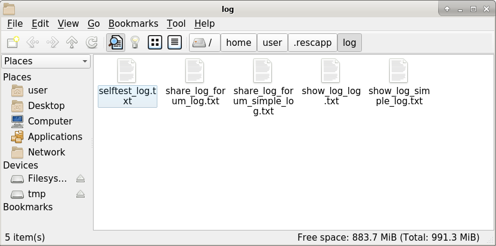

Choose your language.
Show log - Rescapp - Documentation
-
Step 1Tries to open a file manager, (originally PCManFM-Qt), that shows the log folder where all the Rescapp options have saved their logs.

-
Step 2The message:
 [SUCCESS] Show log OK!
[SUCCESS] Show log OK!
is shown.